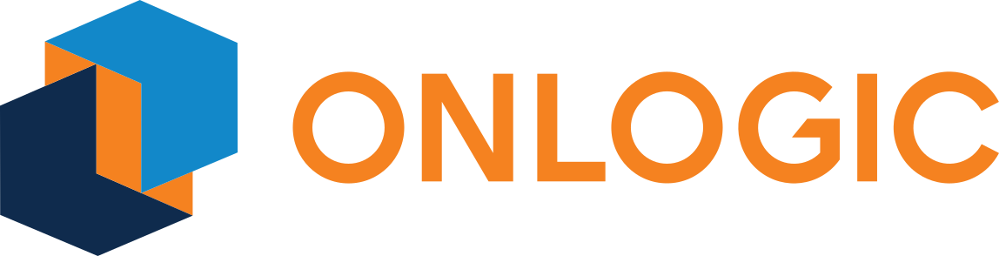

Machine Signal Integration
Connect machine ECUs, displays, sensors, diagnostics, and control signals using practical interface mapping and tested logic.
CANJ1939Diagnostics
We support integration work that turns machine signals, sensor data, camera zones, ROS 2 topics, and operator commands into reliable field-ready workflows.

Connect machine ECUs, displays, sensors, diagnostics, and control signals using practical interface mapping and tested logic.
Bridge machine networks to ROS 2 topics and services with clear contracts, timing behavior, and health monitoring.

Install and configure rugged compute platforms for field use, including systemd services, logging, remote access, and recovery.

Integrate cameras, detection zones, warning states, and machine inhibit logic into safety-oriented workflows.

Translate joystick or external commands into machine-safe command paths with timeout, ownership, and safe-state behavior.
Move from simulation and bench testing to machine commissioning with documentation, diagnostics, and field support.
Each integration starts with the machine interface, required behavior, safety boundaries, timing expectations, and deployment environment. The result is a practical package that can be tested, diagnosed, and maintained.